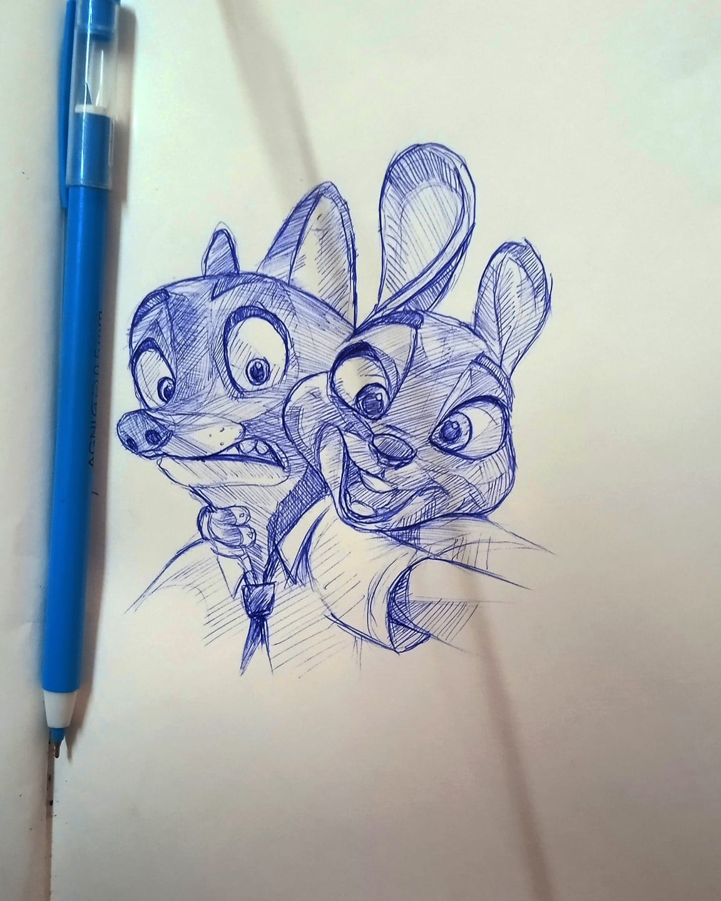
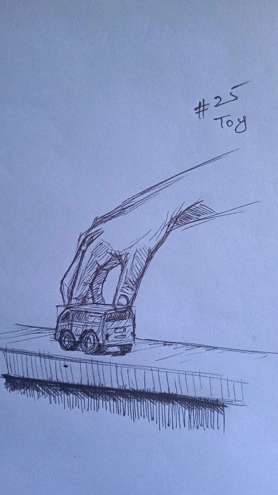
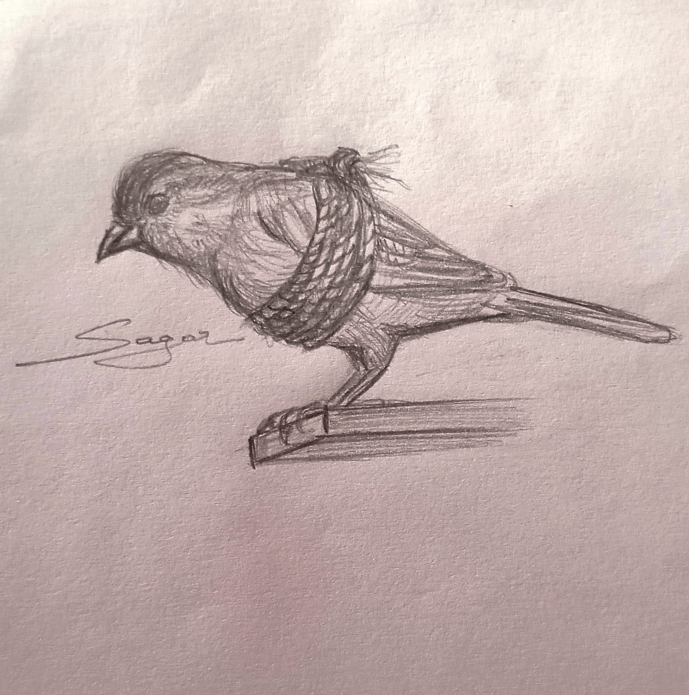
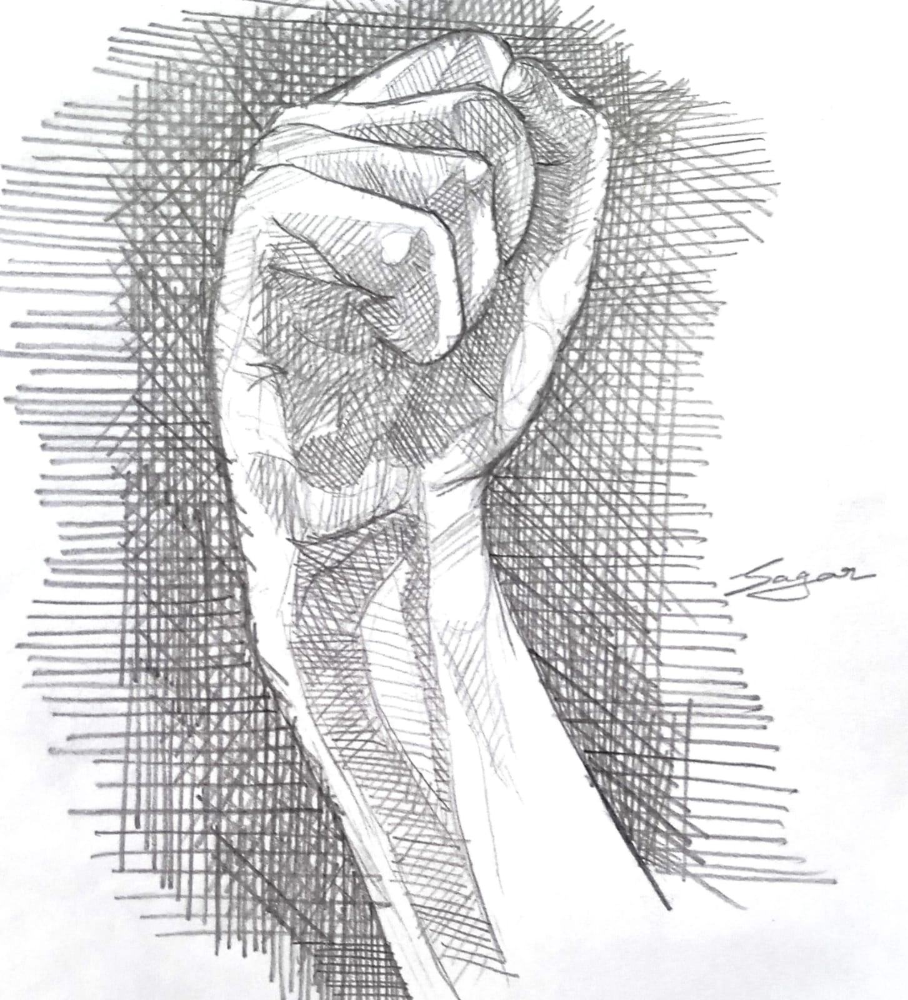
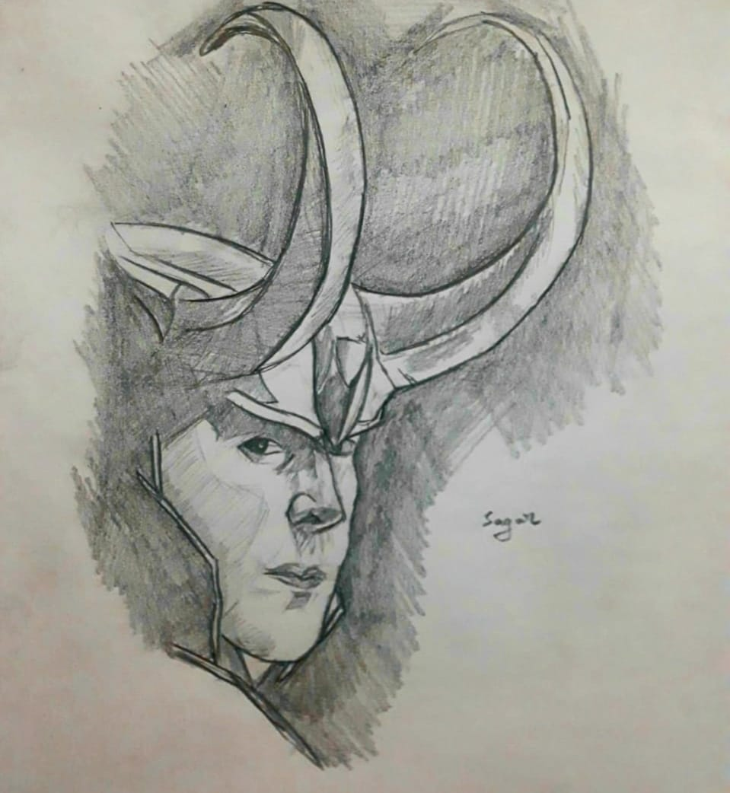
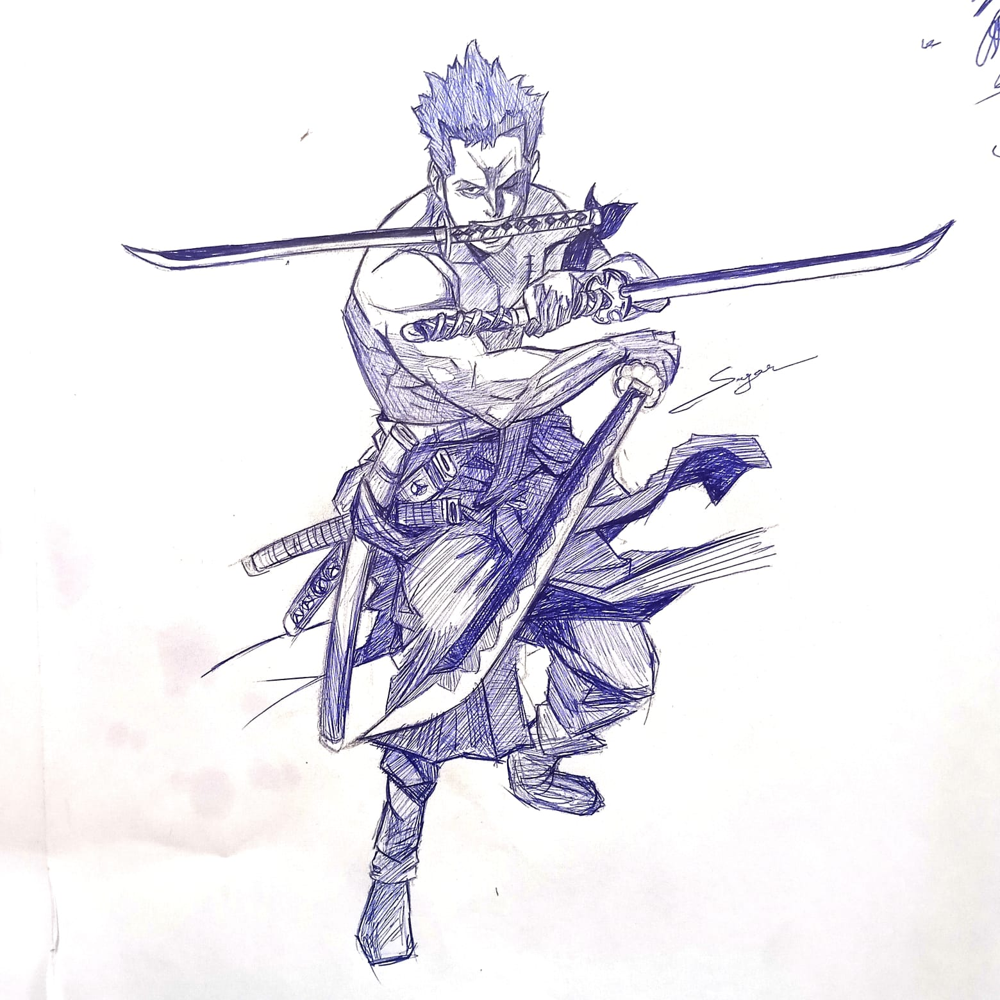
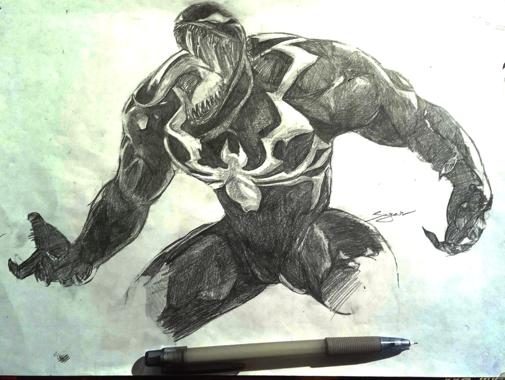

About

I am Sagar Shivaji, an AI Product Designer based in Hyderabad, India. I specialize in complex B2B platforms, design systems, and workflow automation.
With a background in Computer Science specializing in Artificial Intelligence, I bridge the gap between design and technology. I enjoy designing AI-powered products, building scalable design systems, and creating workflows that make enterprise software more efficient, accessible, and easier to use.
Core Capabilities
Design Profile
A visual overview of my core product design capabilities developed through real-world projects.
Professional History
AI Product Designer · Vensiti Inc.
Mar 2026 – PresentDesigning enterprise SaaS products focused on staffing and recruitment. Leading the design of AI-powered platforms including Bench Sales, Lead Generator, Job Pipeline, and Resume Formatter while collaborating closely with product managers, developers, and business stakeholders.
AI Product Design Intern · Techgene Solutions
Dec 2025 – Feb 2026Designed internal enterprise applications and workflow automation tools, contributing to user research, wireframing, high-fidelity interfaces, design systems, and interactive prototypes for AI-driven products.
UX Design Intern · Brain Quest
May 2025 – Jun 2025Designed responsive user interfaces with a strong focus on usability and accessibility. Collaborated with the design team to create wireframes, iterate on high-fidelity designs, and improve user experiences through feedback and design reviews.
Education
B.Tech — Computer Science (Artificial Intelligence & Machine Learning)
Nov 2021 – Aug 2025Specialized in Artificial Intelligence and Machine Learning while building projects in AI, computer vision, and product design. Developed a strong foundation in human-centered design, frontend development, and AI-powered digital experiences.
Drawing taught me to observe.
Before I started designing digital products, drawing was one of the ways I explored ideas and understood the world around me.
I enjoy sketching portraits, objects, and things that catch my attention. It has trained me to notice proportions, details, composition, and small visual relationships ,skills that naturally influence the way I approach product design today.






